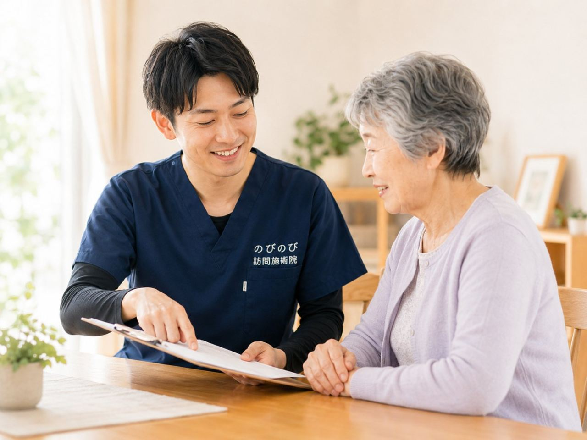

お尻から太ももの裏、ふくらはぎへと走る痛みやしびれ。少し歩くと立ち止まり、また歩いてはつらくなる。座っていても前かがみになってもこたえる、そんな腰から足の不調を抱えたまま、大阪市北区で通院の負担に困っているご本人やご家族は少なくありません。この記事では、まず知っておきたい受診の目安と、医療と鍼灸それぞれの役割、そして自宅で受けられるケアの中身を整理します。
この記事のポイント
坐骨神経痛の原因を見きわめ、治療の中心を担うのは医療です。ヘルニアや脊柱管狭窄症などの診断と方針は、まず整形外科などで受けてください。落ち着いた慢性期に、腰・お尻・脚のこわばりを和らげ血のめぐりを促し、動ける範囲を保つ手伝いをするのが訪問鍼灸の役割です。医師が必要と認め通院が難しければ医療保険が使え、自己負担は1割の方で1回およそ395円（総額3,950円）。北区を含むエリアへ伺います。効果には個人差があります。
梅田の雑踏を抜けた先で、坐骨神経痛と向き合う
大阪市北区は、梅田・大阪駅の巨大なターミナルを中心に、中之島のオフィス街から天満・南森町・扇町の下町情緒、天神橋筋六丁目の商店街まで、表情の異なる街が肩を寄せ合うエリアです。中崎町の古い路地に暮らす方もいれば、中津や大淀、豊崎に建つタワーマンションの高層階で日々を過ごす方もいます。そんな北区で、お尻から太ももの裏、ふくらはぎへと走る痛みやしびれ、いわゆる坐骨神経痛に悩まされている方はめずらしくありません。買い物に出るのも、駅までの道のりも、脚の違和感がつきまとうと途端に億劫になってしまうものです。
坐骨神経痛は片脚に症状が出ることが多く、腰椎から出る神経が刺激されて起こると考えられています。詳しい症状の見分け方や背景については、坐骨神経痛・長引く腰の痛みのページでも掘り下げています。まずはご自身の状態を知ることが、日々を楽にする第一歩になります。
座位・立ち上がり・歩き出し、生活の節目に潜む引き金
坐骨神経痛や足のしびれは、じっとしている時よりも、動作の切り替わりで顔を出すことがよくあります。椅子から立ち上がる瞬間、歩き出しの一歩目、長らく座っていた後に腰を伸ばそうとした時など、生活の節目でお尻の奥や太もも裏にズキッと走る。そんな声を、北区にお住まいの方からもよく伺います。国分寺や本庄、長柄あたりの住宅地で、家事や散歩の合間にふと脚が重くなる、という日常の困りごとです。
冷えとの関わりも見逃せません。エアコンの効いた部屋で長く過ごす夏場や、底冷えする冬場は、腰やお尻まわりがこわばって症状が強まることがあります。座りっぱなしを避け、こまめに姿勢を変えるだけでも、脚への負担の出方は変わってきます。
まず受診すべきサインを知っておく
脚の痛みやしびれの多くは筋肉のこわばりや神経への負担が背景にありますが、なかには急いで医療機関を受診したほうがよい状態も隠れています。急に脚に力が入らなくなる脱力、両脚に広がるしびれ、そして排尿や排便のコントロールがしにくくなるといった変化があるときは、鍼灸やマッサージより先に、整形外科などでの診察を優先してください。原因そのものへの対応は医療の領域であり、鍼灸マッサージはあくまでその補助という位置づけです。
私たちが伺うのは、医師の診察を受け、症状が落ち着いてきた時期のケアが中心です。病気そのものを治すものではありませんが、こわばった腰やお尻、脚まわりをほぐし、日々をやり過ごしやすくするお手伝いはできると考えています。
お尻の奥の張りまで、脚全体をまとめて和らげる
坐骨神経痛のケアでは、痛む脚だけでなく、腰やお尻の深いところまで目を向けることが大切です。太もも裏やふくらはぎの張りは、その手前にあるお尻の奥の筋肉のこわばりと連動していることが多いからです。訪問での施術では、鍼やお灸、手技を組み合わせながら、腰からお尻、脚の後ろ側までを一続きの流れとして和らげていきます。あわせて、機能訓練としてその日の体に合わせての動かし方や、痛みの出にくい姿勢・過ごし方も一緒に探します。この機能訓練は鍼灸に加えて行います。これらに追加の料金はかかりません。
もっとも、効き方には個人差があります。数回で軽さを感じる方もいれば、じっくり続けてようやく波が穏やかになる方もいます。同じ担当者が続けて伺うことで、その日ごとの調子や生活の変化を追いながら、ペースを調整していきます。
保険と料金、北区での対応エリアについて
医療保険のはり・きゅうには対象となる疾病があり、神経痛・リウマチ・頸肩腕症候群・五十肩・腰痛症・頸椎捻挫後遺症の6つが挙げられます。坐骨神経痛は「神経痛」や「腰痛症」の枠で該当しうるもので、医師が必要と認めて同意書を出し、療養費として認められれば医療保険を使えます。要介護認定は不要で、介護保険の区分支給限度額とは別枠のため併用も可能です。ただし同一部位について、医療保険のリハビリと鍼灸を同じ月に同時に算定することはできません。
料金の目安は、1回の施術が総額3,950円。自己負担は1割の方でおよそ395円です。週2回のペースなら、1割の方で月およそ3,160円が目安になります。仕組みの詳しい話は「料金はいくら？医療保険の自己負担額と仕組み」をご覧ください。北区は梅田・中之島から天満・南森町・扇町・中崎町、中津、大淀・豊崎・長柄・国分寺・本庄まで幅広く伺え、エリア内なら出張費はかからず料金は一律です。オートロックのタワーマンションでも、事前にお伝えいただければスムーズにお迎えいただけます。対応範囲は「対応エリアはどこまで来てもらえる？」で、北区全般のご案内は大阪市北区の訪問鍼灸マッサージでご確認いただけます。
よくある質問
北区にも来てもらえますか？
はい、大阪市北区へ伺います。お住まいと、痛み・しびれの出る場所を教えていただければ、伺える範囲かその場でお答えします。北区内であれば、続けて通いやすい体制でお応えします。
坐骨神経痛でも保険が使えますか？
腰や脚の慢性的な痛み・しびれについて医師が必要と認め、通院が難しければ医療保険の対象になり得ます。まず整形外科などで診てもらい、医師の同意書をもとに手続きを進めます。手続きはこちらでお手伝いします。
足のしびれも和らぎますか？
周りのこわばりを和らげ、血のめぐりを促すことで、しびれの感じ方が変わったと話す方もいます。ただし効果には個人差があります。強いしびれや力の入りにくさが続くときは、受診を先にご検討ください。
急に両足がしびれて力が入りません。どうすれば？
急いで医療機関を受診してください。両足のしびれや脱力、尿や便が出にくい・漏れるといった症状は、神経が強く圧迫されているサインのことがあります。訪問の施術より、まず受診を優先してください。
横になったまま受けられますか？
はい、横になったまま受けられます。無理に出かける必要はありません。痛みの出にくい姿勢を確かめながら、その日の体調に合わせて進めます。
要介護認定がなくても利用できますか？
利用できます。医療保険での鍼灸は、医師の同意があれば要介護認定の有無にかかわらず使えます。費用は介護保険の区分支給限度額とは別枠なので、限度額とは別に受けられます。
出張費や交通費は別にかかりますか？
別途の出張費（出張料・交通費）はかかりません。エリア内はどこでも同額です。1回の施術は総額3,950円で、1割の方の自己負担はおよそ395円が目安です。
ケアマネや施設からの相談でも大丈夫ですか？
はい、ご本人・ご家族はもちろん、ケアマネジャーや施設の方からのご相談でも構いません。ケアマネとの連携や施設での対応にも応じます。相談だけのご連絡でも歓迎します。